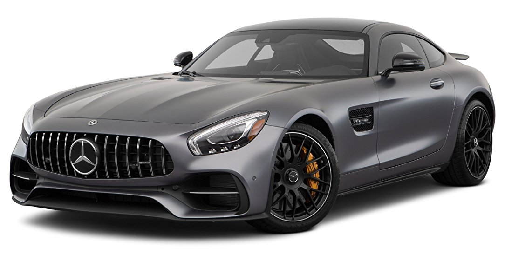
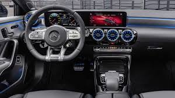
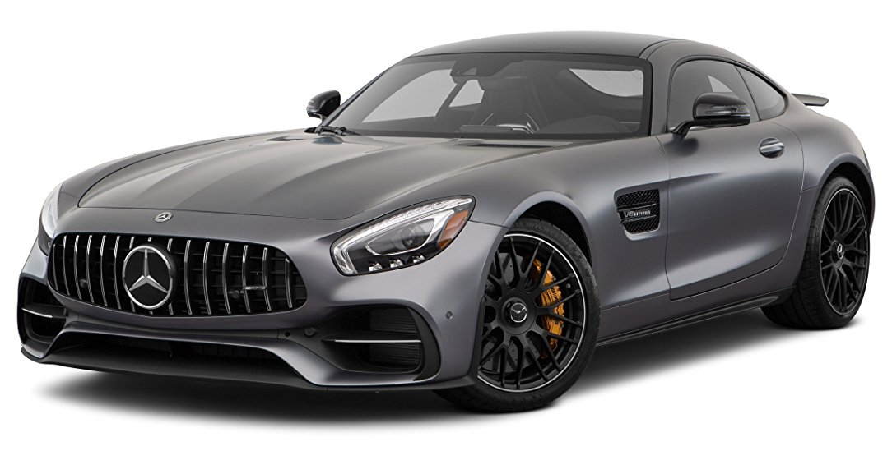
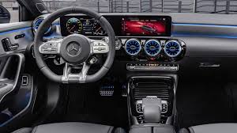

AMG
 



Mercedes
Mercedes-AMG GmbH (зазвичай зване просто AMG) — підрозділ Мерседес-Бенц з доведення (тюнінгу) серійних машин, а також представленню інтересів Мерседес в автоспорті. Таким чином (на відміну від Brabus, Carlsson або Kicherer), AMG є єдиним «офіційним» тюнінговим ательє Mercedes-Benz. Назва AMG — абревіатура: A і M відповідно перші літери прізвищ Ауфрехт і Мельхер, третя ж буква G — від міста Großaspach під Штутгартом, в якому народився Ханс-Вернер Ауфрехт.[1]
Історія
Підприємство було засноване в 1967 році колишніми інженерами Мерседес-Бенц Хансом-Вернером Ауфрехтом і Ерхардом Мельхер (перші літери їх прізвищ та утворили назву нової компанії). Основною метою була доводка серійних машин Мерседес-Бенц. База розташовувалася в Аспах, поблизу Штутгарта. Пізніше Мельхер перейшов в «Підрозділ гоночних моторів» в Аффальтербах, що став ще одним підрозділом AMG. Головним конкурентом нової компанії була фірма Brabus з Ботропа, що також спеціалізувалася на доведенні машин Мерседес. У 1999 році 51 % акцій фірми було придбано концерном DaimlerChrysler, а її назву змінено на Mercedes-AMG. 1 січня 2005 року фірма повністю перейшла у власність Мерседес.В кінці 60-х початку 70-х AMG виставляла в гонки Mercedes-Benz 300SEL-6,3 седан з великим розточеним V8 об'ємом 6,8 літра, який вражав своєю потужністю — понад 400 к.с. — і ревом, за що отримав прізвисько «Червона свиня». Через свою велику масу автомобіль мав проблеми з шинами, так само як потребував частої дозаправки. Однак в 1971 році він виграв 24 години Спа, а пізніше і Європейський кузовний чемпіонат (ETCC). Його змінив Mercedes-Benz 450SLC-5,0 серії R107 з «вісімкою» меншого розміру — 5,0 літрів, який, тим не менш, залишався одним з найбільш потужних і ненажерливих автомобілів в гонках, однак теж записав на свій рахунок чимало перемог, як в кільцевих гонках, так і в ралі. Коли на початку 80-х рр. в лінійці Мерседес з'явилася нова компактна модель 190Е, її теж треба було представити в автоспорті. Спеціально підготовлена за вимогами Групи А серія стартувала в першій гонці на новому кільці Гран-Прі в Нюрбургрингу в 1984 р. Ту гонку виграв молодий гонщик Айртон Сенна. У 1986 р. Мерседес приходить у новий німецький чемпіонат DPM, який міняє свою назву на DTM, але AMG дебютує лише в 1988 р. Однак нова машина, 190Е 2,3-16 далеко не відразу почала перемагати. Лише в 1992 р. перейшовий з Форда Клаус Людвіг приніс чемпіонський титул Мерседесу. Затримка з дебютом нової машини Класу 1 залишила титул 1993 р. в руках італійців з Alfa Romeo, але дебютувала в сезоні 1994 р. нова машина Mercedes-Benz C-Класу відразу ж дозволила Людвігу взяти третій титул в ДТМ, а після його відходу в наступному році перемогу в ДТМ і ITC святкував Бернд Шнайдер. Після припинення ДТМ AMG спішно (всього за 124 дні) будує для чемпіонату FIA GT нову машину — Mercedes-Benz CLK-GTR, яку допускають до гонок, незважаючи на відсутність омологаційної партії в 25 машин, які AMG обіцяла представити пізніше. Нова машина з 12-циліндровим двигуном відразу ж почала перемагати, вигравши титул проти заводських Porsche Carrera GT1 і приватних BMW-McLaren. На наступний рік чемпіонат знову залишився за Мерседес, але домінування однієї марки призвело до відмови від участі приватних команд в старшому класі GT, який був скасований на наступний рік. Однак у гонці 24 години Ле-Мана «еволюційна» версія з 8-циліндровим мотором зазнала невдачі проти Porsche Carrera GT1-98, вже на початку гонки, через поломку паливного насоса — позначилася поспішність у розробці.